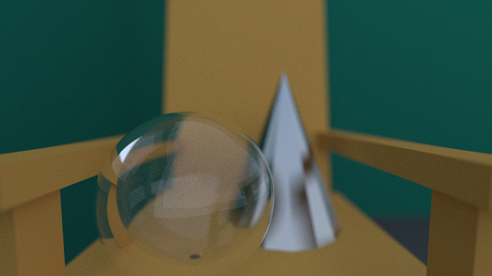

Key Features
Supports basic shapes: Like sphere and triangle and uses these for primitives like cones, cubes and cones.
Diffuse, metal, and dielectric materials: Lambertian, metal with fuzziness, glass with refraction.
Camera model: Allows field-of-view, aspect ratio control, and depth of field via lens sampling.
Recursive ray bouncing: Supports global illumination and soft lighting.
Anti-aliasing: via random sampling per pixel.
CPU parallelization: Using OpenMP library.
Core Functionality
Ray class: Stores origin & direction; computes points along a ray.
Hittable interface & hit records: Defines ray–object intersection behavior and stores intersection details such as point and normal.
Materials system: Uses scatter() to determine ray bounce behavior (diffuse, metal, dielectric) and computes attenuation.
Color computation: Traces rays recursively, accumulates light contributions, and returns sky gradient on misses.
Recursive path tracing: Rays bounce until max depth to avoid infinite recursion.
Monte Carlo integration: Multiple random samples per pixel to reduce noise and achieve realistic lighting.
Gamma correction: Adjusts final pixel colors for proper brightness perception.
Scene & world: A collection of objects tested for ray intersections.
Some raytraced images:
View of objects on a chair (part2)
